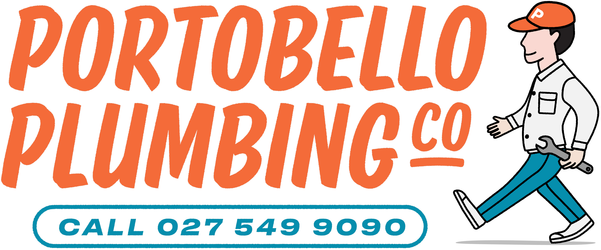
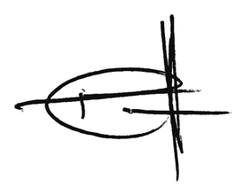

How we run the system
This plan explains how Portobello Plumbing Co meets its duties under the Health and Safety at Work Act 2015. It is written for a small, owner-operated plumbing business working mainly in occupied homes, including tenanted properties managed by principals such as Barfoot & Thompson Property Management.
| Item | Detail |
|---|---|
| Trading name | Portobello Plumbing Co |
| Legal entity / NZBN | Portobello Plumbing Company Limited · NZBN 9429053083524 |
| Director / Officer | Jonathan David Ian Elton |
| Base | 15A Sainsbury Rd, Mt Albert, Auckland |
| Typical work | General plumbing, blocked drains (plumbing work only), hot water (non-gas), bathrooms, kitchens, ladder-access roofing and spouting, water treatment, pre-purchase inspections. Central and West Auckland. |
| Typical workplaces | Occupied residential properties, light commercial sites, roofs, underfloor spaces, bathrooms and kitchens under renovation, public berms and driveways when accessing services. |
| PGDB registration / licence | 19395, registered plumber. No drainlaying or gasfitting licence. |
| Insurance (period) | SMARTpak package via Arthur J. Gallagher, 1 July 2026 to 1 July 2027. Policy PRO92O3V-0 · cover 2286268-000. Insurers: Monument Insurance (NZ) as underwriting agent for IAG New Zealand Ltd, AIG Insurance NZ Ltd, Vero Insurance NZ Ltd. |
| Public / products liability | $5,000,000 public liability any one occurrence · $5,000,000 products liability in the aggregate · New Zealand only. |
| Statutory liability | $1,000,000 any one claim and in the aggregate. |
| Motor legal liability | $10,000,000 legal liability if the van injures someone or damages their property (2018 Fiat Ducato LPA76). This is not cover for damage to the van itself, which is third party only. |
| Material damage | Plant $10,000 · stock $2,000 at 15A Sainsbury Road, plus anywhere-in-NZ plant/stock endorsement to $25,000 any one event. |
| Hours | Monday to Friday 8:30am to 5:00pm, plus agreed after-hours work |
| People on the tools | Primarily the Director only. Occasional subcontract tradespeople may be engaged. An apprentice may be taken on later. This plan already covers those people when they work under our direction. |
This plan covers all Portobello work, plant and vehicles. It sits under the Company Health & Safety Policy and is used with the Harm Register / Risk Management Procedure. Where a principal contractor or building site has its own plan, we follow the stricter of the two requirements and coordinate before starting.
Out of scope (stop and refer):
Risk management follows Document D. In short:
A dynamic site check is completed at arrival: access, occupants, pets, weather, services, working at height, asbestos indicators, isolation needs and emergency exits. If conditions change, we reassess.
Licensed plumbing work is only done by a person holding the correct PGDB registration (licence 19395), or by a trainee under the supervision required by the Plumbers, Gasfitters and Drainlayers Act. We do not carry out gasfitting or licensed drainlaying.
Minimum competence we maintain or require:
Before a subcontractor or apprentice starts a live job they are inducted on this plan, the Harm Register, emergency contacts (including Rosie), incident reporting, PPE, hot-work rules and the right to stop work. We keep a short signed induction record.
Substances we carry are limited: turpentine, acetone, and butane cartridges for a soldering / brazing torch. We do not carry LPG cylinders, acid drain openers or other bulk chemicals. We will:
PPE is the last line of defence, not the first. Standard site kit includes sturdy footwear, eye protection, gloves suited to the task, hearing protection for noisy plant, and a hi-vis garment when working near traffic or on a construction site. Extra PPE is used for the task: P2 or higher respiratory protection for silica/dust or sewage aerosols, chemical-resistant gloves and eye protection when using solvents, cut-resistant gloves for sheet metal and roofing, and sun protection for roof work. PPE is maintained, replaced when worn, and not a substitute for isolation or a safer method.
Ladder access only, following WorkSafe working-at-height guidance. Three points of contact. No roof work in high wind, rain or on fragile cladding. If the job needs a harness, scaffold or roof platform, it is out of remit. We stop and refer.
Assume asbestos may be present in Auckland homes built or renovated before 2000 (pipes, gaskets, vinyl, soffits, textured coatings). Do not drill, cut or disturb suspect material. Stop and arrange a competent survey or licensed removal if needed.
Small pipe trenches only, about 600 mm × 600 mm maximum. Ask the occupier / property manager about known services, review available plans, locate where practicable, and hand-excavate near marked services. Hired equipment is used only within that size limit.
Wastewater, blocked drains and underfloor work. Gloves, eye protection, hygiene, cover cuts, and keep occupants clear. Vaccination status (e.g. tetanus) is encouraged.
Isolate power where work could contact electrical fittings or create a shock path. Do not work on live electrical equipment. Engage a licensed electrician when required.
Tell Rosie the job location and expected finish (020 407 89812). Reassess if a tenant or occupier is aggressive, impaired or the site feels unsafe. Keep children and pets out of the work area.
We occasionally solder, braze or grind. That is hot work: a flame, spark or hot surface that can start a fire, especially in occupied or tenanted homes.
| Situation | Immediate action |
|---|---|
| Serious injury / medical emergency | Call 111. First aid. Do not move the person unless they are in immediate danger. Notify the Director. |
| Fire | Evacuate, call 111, do not re-enter. Use the van fire extinguisher only if the fire is small and the exit is clear. Isolate electricity only if safe to do so. |
| Gas leak on site (we do not do gasfitting) | Do not attempt gasfitting repairs. Evacuate, eliminate ignition sources, ventilate if safe, call 111 / the gas emergency number. Do not operate electrical switches in the affected area. Refer remaining work to a licensed gasfitter. |
| Service strike (power, gas, fibre) | Stop work, keep people back, call the relevant emergency / network number, treat as live until confirmed otherwise. |
| Flooding / uncontrolled water | Isolate supply at the nearest safe valve. Keep electrical hazards in mind. Protect occupants and property if safe. |
| Needle stick / sewage exposure | Encourage bleeding of puncture wounds, wash, seek medical advice the same day. |
Emergency contacts: 111 · Director / Jonathan Elton 027 549 9090 · next of kin / check-in: Rosie 020 407 89812 · WorkSafe 0800 030 040 (notifiable events). First-aid kit and fire extinguisher: carried in the van and taken to the work area for hot work.
All injuries, near misses, property damage and dangerous occurrences are recorded the same day. The Director reviews the record, identifies causes and updates the Harm Register if needed.
A notifiable event (death, notifiable injury or illness, or notifiable incident as defined in HSWA) is reported to WorkSafe as soon as possible by the fastest means, then in writing within 48 hours where required. The scene is preserved until authorised, except to help the injured, make the area safe or prevent further harm.
Injured workers are supported to get treatment and a safe return to work. We do not victimise anyone for reporting a concern or refusing unsafe work.
Day to day this is a one-person business, so engagement is direct. When a subcontractor or apprentice is on a job we brief the work, the site risks and the stop-work rule, and we review any incident with the people involved. If the business grows past the small-PCBU threshold for formal representation, we will put worker participation practices in place as required by HSWA.
Before engaging a subcontractor we check competence, licences and insurance appropriate to the task, share this plan and relevant Harm Register entries, and complete the induction record. An apprentice, if engaged, is supervised to PGDB requirements and is not left to do licensed work alone. On a principal-controlled site, including work for a property manager such as Barfoot & Thompson, we follow their access, tenant-notification and permit rules as well as this plan, whichever is stricter. We coordinate with electricians, builders, roofers and other trades so one trade’s work does not put another at risk.
We watch for hearing, respiratory, skin and musculoskeletal issues linked to the work. Fatigue, heat on roofs, and the mental load of lone work and difficult sites are treated as health risks. Anyone impaired by alcohol, drugs or extreme fatigue does not work.
A vehicle first-aid kit is carried on every job. Completing a workplace first aid course (NZQA unit standards or equivalent) is a planned action for the Director by 30 November 2026.
Records are kept for at least the period required by law, and longer if they support an insurance or liability matter.
The Director reviews this plan at least annually, and after a notifiable event, a repeated near miss, a change in the type of work, or a change in legislation that affects us. Version control is by date on the cover block. Previous versions are archived, not overwritten without a record.
Jonathan David Ian Elton

Complete before soldering, brazing or grinding. One permit per job / work area. Keep with the job record. If the principal has a stricter permit, use that as well.
Checks before starting (tick)
Close-out